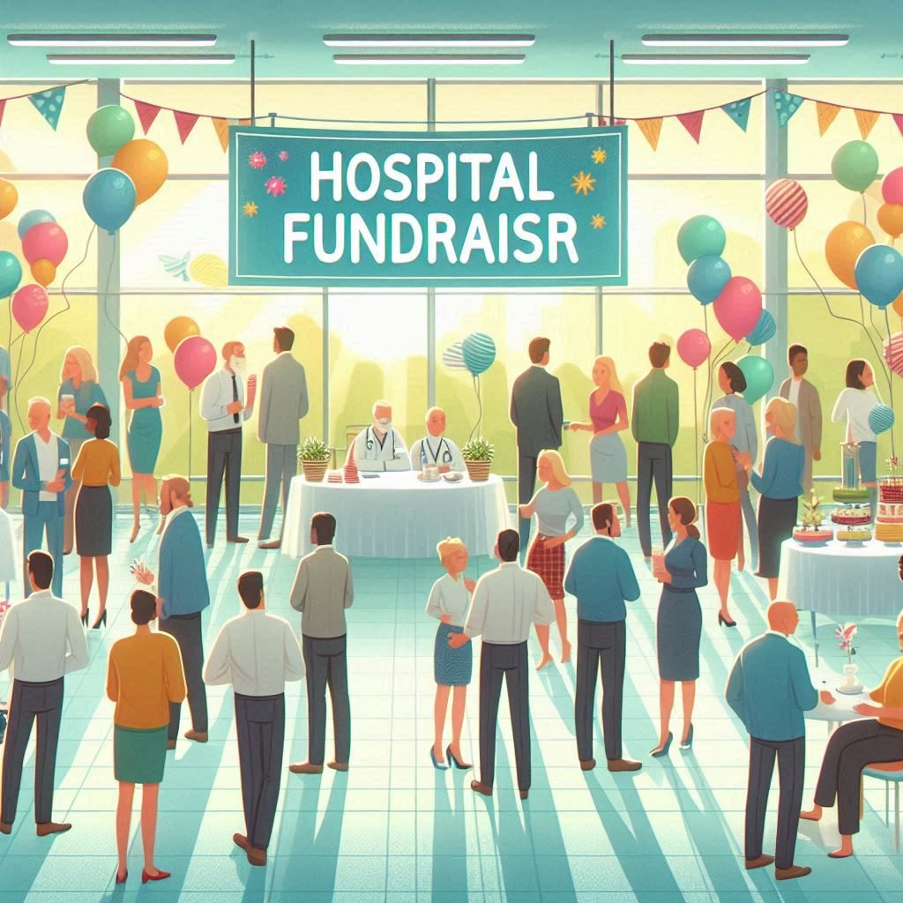

Weather forecast for the next 24 hours: Plenty of Sunshine Wind: 7km/h SSE; Temp: 21°C; Hum: 82%
Giornale Quotidiano
Domenica, 20 Novembre 1904
Papa Francesco partecipa alla Giornata Mondiale dei Poveri nonostante il freddo pungente
Città del Vaticano - In una giornata segnata da temperature eccezionalmente basse per la Città Eterna, Papa Francesco ha dimostrato ancora una volta la sua dedizione ai più bisognosi, partecipando alla settima edizione della Giornata Mondiale dei Poveri. L'evento, istituito dal Pontefice stesso nel 2017, si è svolto domenica scorsa in una Roma avvolta da un freddo pungente che ha sorpreso residenti e pellegrini.
Il Santo Padre, in un'immagine che rimarrà impressa nei cuori dei fedeli, ha fatto il suo ingresso in Piazza San Pietro indossando un piumino bianco sopra la tradizionale veste papale. Questo gesto, tanto pratico quanto simbolico, ha sottolineato la volontà del Papa di condividere, almeno in parte, le difficoltà di coloro che affrontano l'inverno senza un riparo adeguato.
La celebrazione è iniziata alle 10:00 con una solenne Messa nella Basilica di San Pietro, gremita di fedeli provenienti da ogni parte del mondo. Tra i presenti, molti erano visibilmente in condizioni di disagio economico, invitati personalmente dal Vaticano a partecipare a questo momento di comunione e solidarietà.
Durante l'omelia, Papa Francesco ha toccato temi cari al suo pontificato: "Il freddo di questo inverno non deve congelare i nostri cuori," ha affermato con voce ferma. "Anzi, deve spingerci a riscaldare l'animo di chi soffre con gesti concreti di solidarietà. La povertà non è solo mancanza di beni materiali, ma anche di relazioni, di opportunità, di speranza. Siamo chiamati a costruire ponti, non muri."
Il Pontefice ha poi continuato: "In un mondo che corre sempre più veloce, dobbiamo imparare a fermarci, a guardare negli occhi chi è rimasto indietro. Solo così potremo costruire una società veramente inclusiva, dove nessuno si senta escluso o dimenticato."
Papa Francesco sfida il gelo per la Giornata Mondiale dei Poveri: Il freddo non ferma la carità
Il Pontefice ha poi continuato: "In un mondo che corre sempre più veloce, dobbiamo imparare a fermarci, a guardare negli occhi chi è rimasto indietro. Solo così potremo costruire una società veramente inclusiva, dove nessuno si senta escluso o dimenticato."
Dopo la celebrazione eucaristica, come ormai tradizione, il Papa ha pranzato nell'Aula Paolo VI con circa 1.200 persone in difficoltà economica. Il menu, preparato da chef volontari, comprendeva piatti della tradizione italiana, pensati per offrire conforto e calore in una giornata così fredda. Durante il pasto, Francesco si è intrattenuto con i commensali, ascoltando le loro storie e offrendo parole di conforto e incoraggiamento.
L'organizzazione dell'evento, curata dal Dicastero per il Servizio della Carità, ha visto la partecipazione di centinaia di volontari provenienti da tutta Italia. Molti di loro hanno lavorato instancabilmente nei giorni precedenti per assicurare che tutto fosse pronto per accogliere gli ospiti speciali del Papa.
Il cardinale Konrad Krajewski, Elemosiniere Apostolico, visibilmente commosso, ha commentato l'evento: "Vedere il Santo Padre indossare un piumino ci ricorda che anche lui è umano e sente il freddo. Ma il suo calore umano supera qualsiasi temperatura. Oggi abbiamo visto la Chiesa che Francesco sogna: una Chiesa che non solo parla di carità, ma la vive concretamente."
L'iniziativa di quest'anno ha posto un accento particolare sull'importanza di non dimenticare i più vulnerabili durante i mesi invernali. Diverse organizzazioni caritative hanno collaborato con il Vaticano per distribuire non solo pasti caldi, ma anche coperte, sacchi a pelo e vestiti invernali ai partecipanti bisognosi.
Tra le novità di questa edizione, è stato allestito un presidio medico mobile in Piazza San Pietro, dove medici volontari hanno offerto check-up gratuiti e assistenza sanitaria di base. Questa iniziativa ha sottolineato l'approccio olistico del Vaticano alla cura dei poveri, che va oltre il semplice aiuto materiale.
La Giornata Mondiale dei Poveri continua a essere un momento significativo nel calendario del Vaticano, riflettendo l'impegno costante di Papa Francesco verso i meno fortunati. L'evento di quest'anno, sfidando le avverse condizioni meteorologiche, ha dimostrato che la carità e la solidarietà non conoscono stagioni.
Mentre la giornata volgeva al termine e i partecipanti lasciavano la Città del Vaticano, molti con lacrime di gratitudine negli occhi, era chiaro che il messaggio del Papa aveva colpito nel segno. In un mondo spesso segnato da divisioni e indifferenza, la Giornata Mondiale dei Poveri rimane un faro di speranza e un richiamo all'azione per tutti i fedeli.
Il sindaco di Roma, presente all'evento, ha annunciato che, ispirato dall'iniziativa papale, il Comune aumenterà i fondi destinati all'assistenza dei senzatetto durante i mesi invernali. Un segno tangibile che le parole e le azioni del Pontefice possono avere un impatto concreto ben oltre le mura vaticane.
Mentre Papa Francesco salutava gli ultimi ospiti, ancora avvolto nel suo piumino bianco, era evidente che questa Giornata Mondiale dei Poveri sarebbe rimasta impressa nella memoria collettiva non solo per il freddo eccezionale, ma soprattutto per il calore umano che ha saputo generare.
Crisi energetica globale: un’escalation che scuote l’economia mondiale
Preoccupazione in Europa e negli Stati Uniti: rincari senza precedenti su gas e elettricità
Crisi energetica globale: rincari record colpiscono Europa e USA, con governi in cerca di soluzioni immediate.
Negli ultimi sei mesi, il mondo sta vivendo una delle più gravi crisi energetiche degli ultimi decenni. I prezzi del gas naturale e dell'elettricità hanno registrato un aumento vertiginoso, colpendo duramente famiglie, imprese e intere economie nazionali. Le cause di questa crisi sono complesse e interconnesse, riflettendo le fragilità del sistema energetico globale.
Le forniture di gas dalla Russia, uno dei principali esportatori verso l’Europa, sono state drasticamente ridotte a causa di tensioni geopolitiche crescenti. Il conflitto in Ucraina e le sanzioni internazionali hanno aggravato ulteriormente la situazione, causando interruzioni nelle catene di approvvigionamento. Paesi come Germania, Francia e Italia si trovano ora a fare i conti con bollette energetiche che hanno subito aumenti fino al 70%, mettendo a rischio interi settori industriali e il benessere delle famiglie più vulnerabili.
Nel frattempo, l'Asia, con un aumento senza precedenti della domanda energetica in Cina e India, ha innescato una competizione globale per l’acquisto di gas naturale liquefatto (GNL). Anche gli Stati Uniti, nonostante la loro capacità produttiva interna, stanno affrontando un’impennata nei costi, dovuta sia alla crescente domanda interna che alle esportazioni verso l’Europa, che hanno raggiunto livelli record.
DISCORSO DEL SINDACO
Il Sindaco terrà un discorso pubblico lunedì mattina riguardo al progetto di riqualificazione del
centro storico. Si prevede che il progetto creerà nuove opportunità di lavoro.
Katy Perry Incanta il Pubblico al "Festival Invernale delle Meraviglie"
Crisi energetica globale: rincari record colpiscono Europa e USA, con governi in cerca di soluzioni immediate.
Sabato scorso, Katy Perry ha fatto la sua magica apparizione al "Festival Invernale delle Meraviglie", un evento straordinario che ha riunito migliaia di fan e appassionati di musica nel cuore della città. Questa celebrazione invernale è diventata un punto di riferimento annuale, attirando artisti e spettatori da ogni parte del mondo.
Katy ha stupito tutti con un abito incantevole, ispirato a una fata dei boschi. Il suo vestito scintillante, decorato con foglie e fiori iridescenti, catturava la luce in modo straordinario, creando un effetto quasi etereo. Il look era completato da una corona di fiori e da un trucco luminoso, che esaltava i suoi lineamenti e il suo fascino. Con i capelli fluenti e ondulati, Katy sembrava davvero una dea della natura, pronta a incantare il pubblico con la sua presenza.
Durante la sua esibizione, Katy ha cantato alcuni dei suoi successi più iconici, mescolando le canzoni con nuovi brani che hanno entusiasmato i fan. La sua voce potente e coinvolgente ha riempito l'aria gelida, mentre il pubblico ballava e cantava insieme a lei. La scenografia magica, con luci scintillanti e proiezioni artistiche, ha creato un'atmosfera da sogno, trasportando gli spettatori in un mondo incantato.
L'evento ha incluso anche performance di altri artisti di talento, spettacoli di luci mozzafiato e attività per tutta la famiglia, rendendo la serata un'esperienza indimenticabile per tutti. I fan di Katy, vestiti con abiti invernali festivi, hanno affollato il luogo, condividendo la loro gioia sui social media e pubblicando foto e video della star.
In un'intervista dopo il concerto, Katy ha dichiarato: “Essere qui oggi è stato incredibile. Vedere così tanti volti felici e condividere la mia musica in un ambiente così magico è un'esperienza unica. Questo festival rappresenta tutto ciò che amo: la musica, la bellezza della natura e la gioia di stare insieme”.
Con la sua performance straordinaria e il suo look da favola, Katy Perry ha sicuramente lasciato un'impronta indelebile al "Festival Invernale delle Meraviglie". Non vediamo l'ora di vederla tornare nel prossimo anno!
ANNUNCI SOCIALI

Raccolta Fondi per l'Ospedale Pediatrico di Roma
Il 10 ottobre, presso il Parco Comunale di Villa Borghese, si terrà una raccolta fondi a favore dell’Ospedale Pediatrico di Roma. L’evento, organizzato dall’associazione “Cuori Uniti”, avrà lo scopo di raccogliere donazioni per l’acquisto di nuove attrezzature mediche per il reparto di terapia intensiva neonatale.
Tutti i cittadini sono invitati a partecipare. Durante la giornata si svolgeranno attività per famiglie, giochi per bambini e una lotteria di beneficenza.
Un piccolo gesto può fare una grande differenza.
Per maggiori informazioni, visitate il sito www.cuoriuniti.org